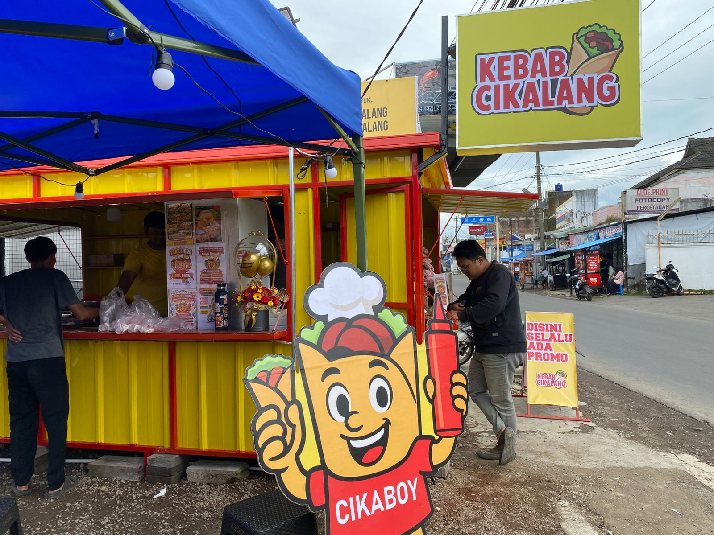

21 Januari 2026
Dari Kebab Frozen Gocengan, Kebab Cikalang Kini Jadi Raja Promo di Tasikmalaya
TASIKMALAYA – Berawal dari kebab frozen seharga gocengan pada tahun 2020, Kebab Cikalang kini menjelma menjadi salah satu ikon kuliner yang paling dikenal di Kota Tasikmalaya, Jawa Barat. Enam tahun berjalan, brand lokal ini sukses mencuri perhatian publik hingga viral di media sosial.
Baca Selengkapnya →